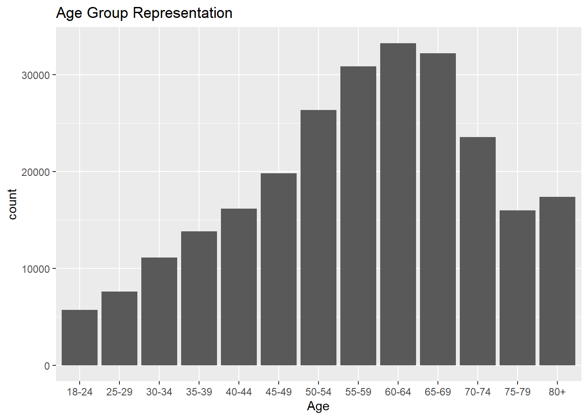
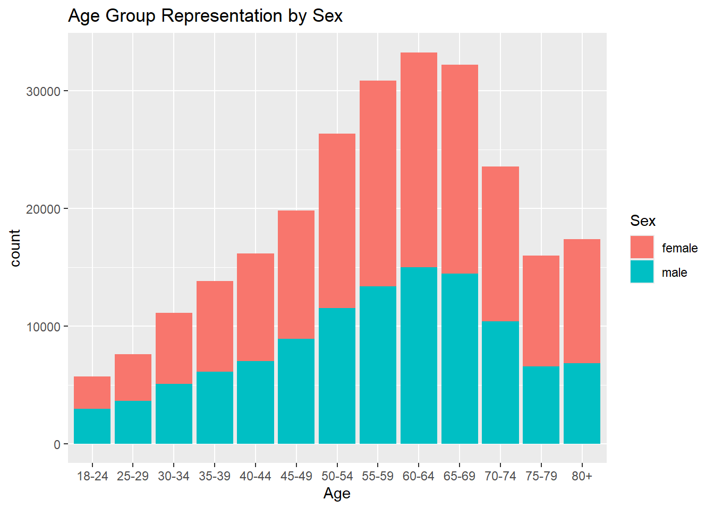
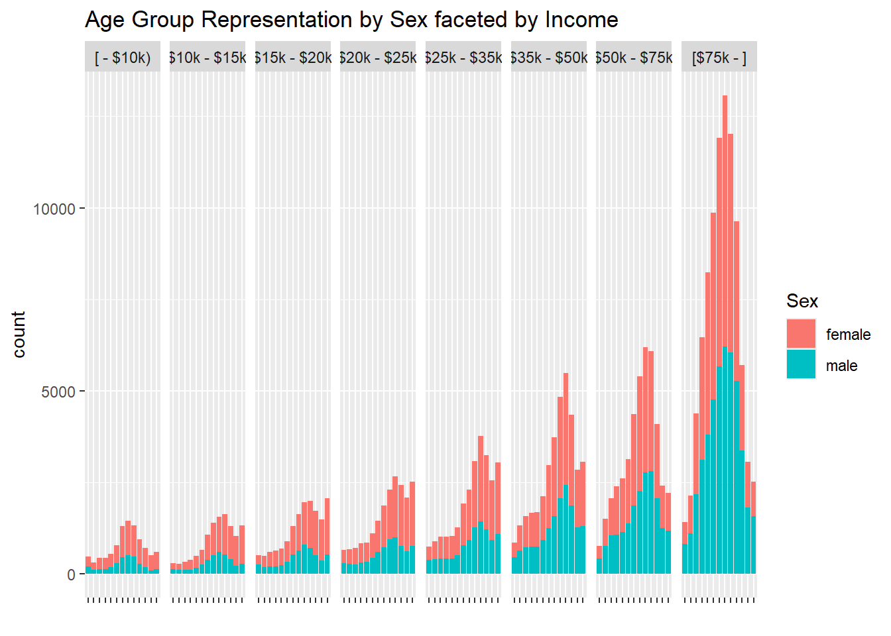
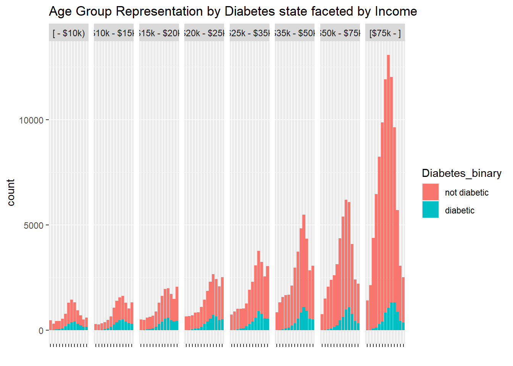
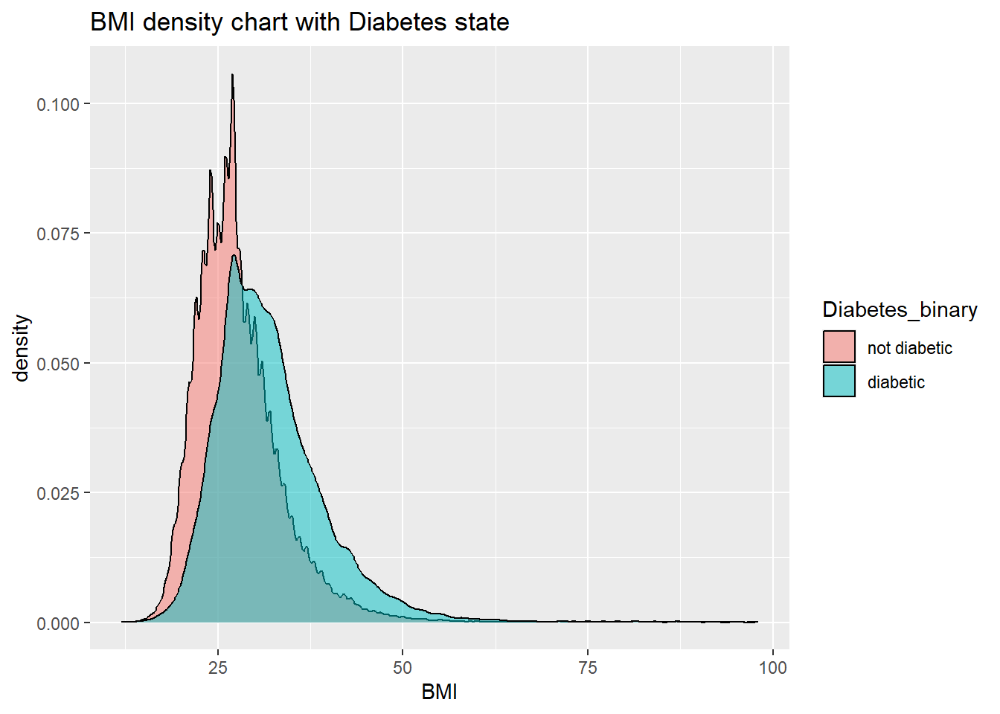
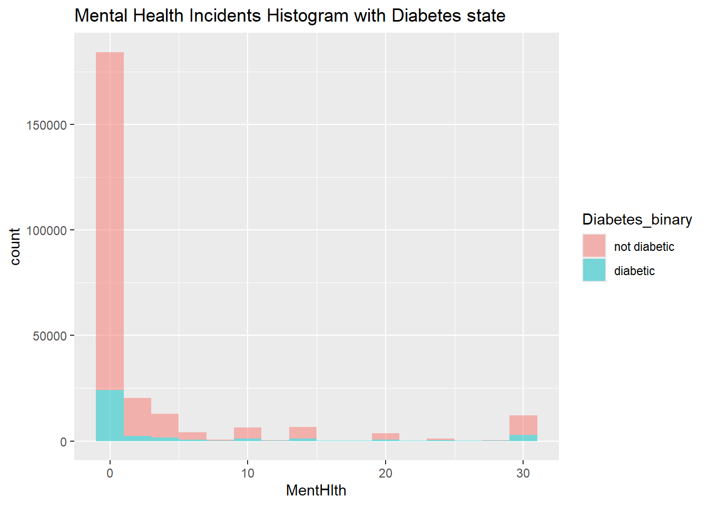
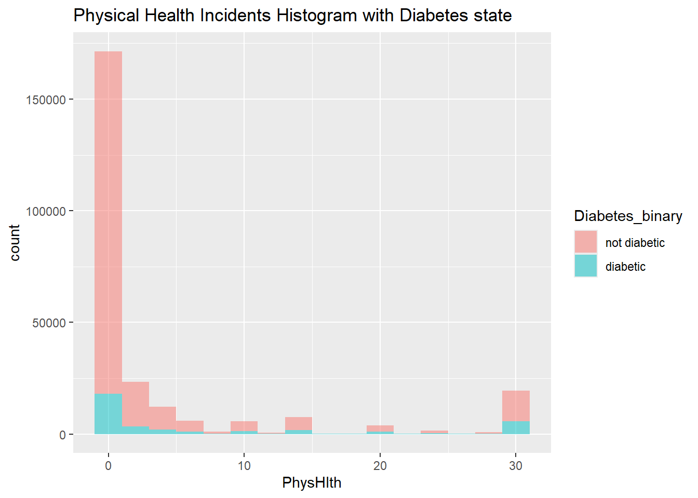
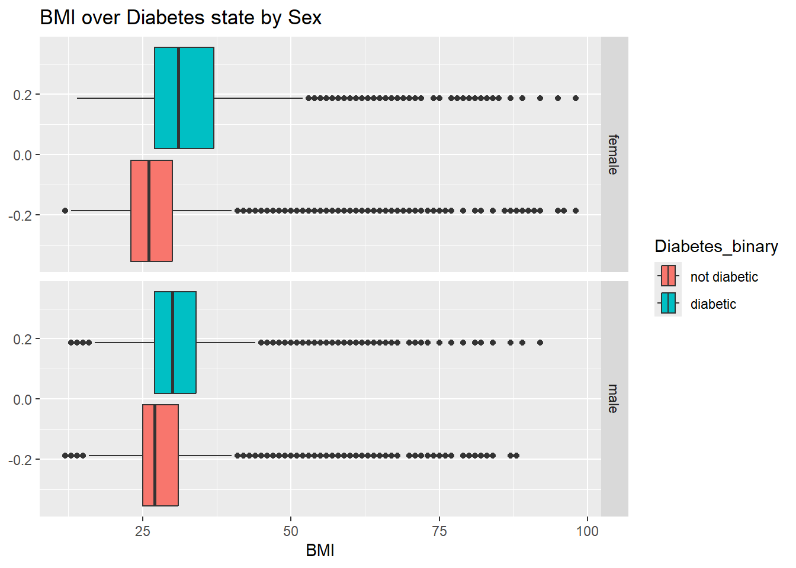

This project explores a dataset, develops models for it, and provides an API interface for on-demand model results. This is one of two Quarto documents; the other is linked at the bottom of this page.
Project introduction
Dataset
We are studying data on diabetes health indicators, pulled from Kaggle. The following summaries are from the dataset source page:
Survey summary
The Behavioral Risk Factor Surveillance System (BRFSS) is a health-related telephone survey that is collected annually by the CDC. Each year, the survey collects responses from over 400,000 Americans on health-related risk behaviors, chronic health conditions, and the use of preventative services. It has been conducted every year since 1984. For this project, a csv of the dataset available on Kaggle for the year 2015 was used. This original dataset contains responses from 441,455 individuals and has 330 features. These features are either questions directly asked of participants, or calculated variables based on individual participant responses.
Data file summary
diabetes _ binary _ health _ indicators _ BRFSS2015.csvis a clean dataset of 253,680 survey responses to the CDC’s BRFSS2015. The target variable Diabetes_binary has 2 classes. 0 is for no diabetes, and 1 is for prediabetes or diabetes. This dataset has 21 feature variables and is not balanced.
Column descriptions
Diabetes_binary(response variable) 0 = no diabetes 1 = diabetes
HighBP 0 = no high BP 1 = high BP
HighChol 0 = no high cholesterol 1 = high cholesterol
CholCheck 0 = no cholesterol check in 5 years 1 = yes cholesterol check in 5 years
BMI Body Mass Index
Smoker Have you smoked at least 100 cigarettes in your entire life? [Note: 5 packs = 100 cigarettes] 0 = no 1 = yes
Stroke (Ever told) you had a stroke. 0 = no 1 = yes
HeartDiseaseorAttack coronary heart disease (CHD) or myocardial infarction (MI) 0 = no 1 = yes
PhysActivity physical activity in past 30 days - not including job 0 = no 1 = yes
Fruits Consume Fruit 1 or more times per day 0 = no 1 = yes
Veggies Consume Vegetables 1 or more times per day 0 = no 1 = yes
HvyAlcoholConsump (adult men >=14 drinks per week and adult women>=7 drinks per week) 0 = no 1 = yes
AnyHealthcare Have any kind of health care coverage, including health insurance, prepaid plans such as HMO, etc. 0 = no 1 = yes
NoDocbcCost Was there a time in the past 12 months when you needed to see a doctor but could not because of cost? 0 = no 1 = yes
GenHlth Would you say that in general your health is: scale 1-5 1 = excellent 2 = very good 3 = good 4 = fair 5 = poor
MentHlth days of poor mental health scale 1-30 days
PhysHlth physical illness or injury days in past 30 days scale 1-30
DiffWalk Do you have serious difficulty walking or climbing stairs? 0 = no 1 = yes
Education Education level (EDUCA see codebook) scale 1-6 - 1 = Never attended school or only kindergarten - 2 = Grades 1 through 8 (Elementary) - 3 = Grades 9 through 11 (Some high school) - 4 = Grade 12 or GED (High school graduate) - 5 = College 1 year to 3 years (Some college or technical school) - 6 = College 4 years or more (College graduate)
Income Income scale (INCOME2 see codebook) scale 1-8 - 1 = less than $10,000 - 2 = Less than $15,000 ($10,000 to less than $15,000) - 3 = Less than $20,000 ($15,000 to less than $20,000) - 4 = Less than $25,000 ($20,000 to less than $25,000) - 5 = Less than $35,000 ($25,000 to less than $35,000) - 6 = Less than $50,000 ($35,000 to less than $50,000) - 7 = Less than $75,000 ($50,000 to less than $75,000) - 8 = $75,000 or more
Contents
There are six components to this project.
EDA - quarto file with EDA (this file)
Modeling - quarto file to select the best model using tidymodels
API - R file fitting the model and defining API structure
Dockerfile - for building the Docker image
.tar - Docker image
Demo - video showing me demonstrating my Docker container
R libraries
library(tidyverse)
── Attaching core tidyverse packages ──────────────────────── tidyverse 2.0.0 ──
✔ dplyr 1.1.4 ✔ readr 2.1.5
✔ forcats 1.0.0 ✔ stringr 1.5.1
✔ ggplot2 3.5.1 ✔ tibble 3.2.1
✔ lubridate 1.9.3 ✔ tidyr 1.3.1
✔ purrr 1.0.2
── Conflicts ────────────────────────────────────────── tidyverse_conflicts() ──
✖ dplyr::filter() masks stats::filter()
✖ dplyr::lag() masks stats::lag()
ℹ Use the conflicted package (<http://conflicted.r-lib.org/>) to force all conflicts to become errors
library(tidymodels)
Warning: package 'tidymodels' was built under R version 4.4.2
As typical, let’s conduct standard data cleanup checks, ETL, and other EDA tasks before proceeding to model the data. Although a best practice would be to split the data at hand into a training and testing set first, I’m studying the full data.
missing or malformed values
proper data types
factoring
categorical summaries
numeric summaries
Data read
Read the data into our instance, in the variable data.
Rows: 253680 Columns: 22
── Column specification ────────────────────────────────────────────────────────
Delimiter: ","
dbl (22): Diabetes_binary, HighBP, HighChol, CholCheck, BMI, Smoker, Stroke,...
ℹ Use `spec()` to retrieve the full column specification for this data.
ℹ Specify the column types or set `show_col_types = FALSE` to quiet this message.
Diabetes_binary HighBP HighChol CholCheck
Min. :0.0000 Min. :0.000 Min. :0.0000 Min. :0.0000
1st Qu.:0.0000 1st Qu.:0.000 1st Qu.:0.0000 1st Qu.:1.0000
Median :0.0000 Median :0.000 Median :0.0000 Median :1.0000
Mean :0.1393 Mean :0.429 Mean :0.4241 Mean :0.9627
3rd Qu.:0.0000 3rd Qu.:1.000 3rd Qu.:1.0000 3rd Qu.:1.0000
Max. :1.0000 Max. :1.000 Max. :1.0000 Max. :1.0000
BMI Smoker Stroke HeartDiseaseorAttack
Min. :12.00 Min. :0.0000 Min. :0.00000 Min. :0.00000
1st Qu.:24.00 1st Qu.:0.0000 1st Qu.:0.00000 1st Qu.:0.00000
Median :27.00 Median :0.0000 Median :0.00000 Median :0.00000
Mean :28.38 Mean :0.4432 Mean :0.04057 Mean :0.09419
3rd Qu.:31.00 3rd Qu.:1.0000 3rd Qu.:0.00000 3rd Qu.:0.00000
Max. :98.00 Max. :1.0000 Max. :1.00000 Max. :1.00000
PhysActivity Fruits Veggies HvyAlcoholConsump
Min. :0.0000 Min. :0.0000 Min. :0.0000 Min. :0.0000
1st Qu.:1.0000 1st Qu.:0.0000 1st Qu.:1.0000 1st Qu.:0.0000
Median :1.0000 Median :1.0000 Median :1.0000 Median :0.0000
Mean :0.7565 Mean :0.6343 Mean :0.8114 Mean :0.0562
3rd Qu.:1.0000 3rd Qu.:1.0000 3rd Qu.:1.0000 3rd Qu.:0.0000
Max. :1.0000 Max. :1.0000 Max. :1.0000 Max. :1.0000
AnyHealthcare NoDocbcCost GenHlth MentHlth
Min. :0.0000 Min. :0.00000 Min. :1.000 Min. : 0.000
1st Qu.:1.0000 1st Qu.:0.00000 1st Qu.:2.000 1st Qu.: 0.000
Median :1.0000 Median :0.00000 Median :2.000 Median : 0.000
Mean :0.9511 Mean :0.08418 Mean :2.511 Mean : 3.185
3rd Qu.:1.0000 3rd Qu.:0.00000 3rd Qu.:3.000 3rd Qu.: 2.000
Max. :1.0000 Max. :1.00000 Max. :5.000 Max. :30.000
PhysHlth DiffWalk Sex Age
Min. : 0.000 Min. :0.0000 Min. :0.0000 Min. : 1.000
1st Qu.: 0.000 1st Qu.:0.0000 1st Qu.:0.0000 1st Qu.: 6.000
Median : 0.000 Median :0.0000 Median :0.0000 Median : 8.000
Mean : 4.242 Mean :0.1682 Mean :0.4403 Mean : 8.032
3rd Qu.: 3.000 3rd Qu.:0.0000 3rd Qu.:1.0000 3rd Qu.:10.000
Max. :30.000 Max. :1.0000 Max. :1.0000 Max. :13.000
Education Income
Min. :1.00 Min. :1.000
1st Qu.:4.00 1st Qu.:5.000
Median :5.00 Median :7.000
Mean :5.05 Mean :6.054
3rd Qu.:6.00 3rd Qu.:8.000
Max. :6.00 Max. :8.000
We need to factor many of these fields. I also like to change doubles to integers for appropriate numeric fields. I checked the summary() to confirm that categorical variables like Age do not have values outside of the known ranges.
Converting factors
First, factoring the simple ones with only a 0/1, then the batch of larger categorical fields.
#simple factors firstdata <- data |>mutate(Diabetes_binary =factor(Diabetes_binary,labels=c("not diabetic","diabetic")),HighBP =factor(HighBP,labels=c("no high blood pressure","high blood pressure")),HighChol =factor(HighChol,labels=c("no high cholesterol","high cholesterol")),CholCheck =factor(CholCheck,labels=c("no recent cholesterol check","recent cholesterol check")),Smoker =factor(Smoker,labels=c("non-smoker","smoker")),Stroke =factor(Stroke,labels=c("no stroke","stroke")),HeartDiseaseorAttack =factor(HeartDiseaseorAttack,labels=c("no heart problems CHD/MI","heart problems CHD/MI")),PhysActivity =factor(PhysActivity,labels=c("no physical activity","physical activity")),Fruits =factor(Fruits,labels=c("no fruits","fruits")),Veggies =factor(Veggies,labels=c("no vegetables","vegetables")),HvyAlcoholConsump =factor(HvyAlcoholConsump,labels=c("no heavy alcohol","heavy alcohol")),AnyHealthcare =factor(AnyHealthcare,labels=c("no healthcare","healthcare")),NoDocbcCost =factor(NoDocbcCost,labels=c("not avoided doctor for cost","avoided doctor for cost")),DiffWalk =factor(DiffWalk,labels=c("no walking difficulty","walking difficulty")),Sex =factor(Sex,labels=c("female","male")))#larger categoriesdata <- data |>mutate(GenHlth =factor(GenHlth,labels=c("excellent","very good","good","fair","poor")),Age =factor(Age,labels=c("18-24","25-29","30-34","35-39","40-44","45-49","50-54","55-59","60-64","65-69","70-74","75-79","80+")),Education =factor(Education,labels=c("Never attended school or only kindergarten","Grades 1-8 (Elementary)","Grades 9-11 (Some high school)","Grades 12 or GED (High school graduate)","College 1-3 years (Some college or technical school","College 4+ years (College graduate)")),Income =factor(Income,labels=c("[ - $10k)","[$10k - $15k)","[$15k - $20k)","[$20k - $25k)","[$25k - $35k)","[$35k - $50k)","[$50k - $75k)","[$75k - ]")))
Adjust numeric
Transitioning from double to integers where needed. Checking values to confirm integers appropriate before switch.
#checking results for integer reasonablenessunique(data$BMI)
Making a few exploratory charts and plots, to increase understanding of the data and explore hunches and questions.
Categorical
This section explores a few categorical variables with contingency tables and bar plots.
What is our distribution of failures and successes (Diabetes_binary)?
data |>group_by(Diabetes_binary) |>summarize(count =n())
# A tibble: 2 × 2
Diabetes_binary count
<fct> <int>
1 not diabetic 218334
2 diabetic 35346
About 7:1 non-diabetic vs diabetic, with satisfactory sample sizes.
Let’s explore the sex and age makeups. I’m switching to plots because I find the tabular, numeric contingency data to be less informative for exploration.
g <- data |>ggplot(aes(x=Age ) ) +labs(title="Age Group Representation" ) +geom_bar( )g

Most in their 50-60s, generally older subjects.
g <- data |>ggplot(aes(x=Age,fill=Sex ) ) +labs(title="Age Group Representation by Sex" ) +geom_bar( )g

Reasonably equal makeup of men and women across age groups. How about the same faceted across income levels?
g <- data |>ggplot(aes(x=Age,fill=Sex ) ) +labs(title="Age Group Representation by Sex faceted by Income",x='' ) +geom_bar( ) +facet_grid( . ~ Income ) +theme(axis.text.x=element_blank() )g

Our survey data leans heavily on middle class+ respondents. It’s worth recalling this as interpretations are made in aggregate, either to temper them with a known skew toward high earners or else grouped by income levels as a known strata of interest. Then again, this variable may have no significant bearing on the predictive model, in which case this point is unnecessary.
Let’s adjust this to see diabetic state by income level.
g <- data |>ggplot(aes(x=Age,fill=Diabetes_binary ) ) +labs(title="Age Group Representation by Diabetes state faceted by Income",x='' ) +geom_bar( ) +facet_grid( . ~ Income ) +theme(axis.text.x=element_blank() )g

At a glance, I think the proportion of diabetic respondents is higher for lower income levels. Interesting but no takeaway right now.
Numerical
We have three numeric fields to explore: BMI, Mental Health, and Physical Health. The encoding here is a little confusing, where higher numbers indicate more detrimental values of BMI, mental, or physical health. The two health fields are a count of problems experienced in the last X days.
First, let’s check density charts for Diabetic and non-Diabetic fills.
g <- data |>ggplot(aes(x=BMI,fill=Diabetes_binary ) ) +labs(title="BMI density chart with Diabetes state", ) +geom_density(alpha=0.5#bindwidth=11 ) g

That is staggeringly clear, a strong predictor.
g <- data |>ggplot()g +aes(x=MentHlth,fill=Diabetes_binary ) +labs(title="Mental Health Incidents Histogram with Diabetes state", ) +geom_histogram(alpha=0.5,binwidth=2 )

g <- data |>ggplot()g +aes(x=PhysHlth,fill=Diabetes_binary ) +labs(title="Physical Health Incidents Histogram with Diabetes state", ) +geom_histogram(alpha=0.5,binwidth=2 )

These health numeric variables are skewed heavily right, with most respondents reporting 0. I don’t expect much to come from it but let’s check summaries and correlation too.
data |>select(BMI,MentHlth,PhysHlth) |>summary()
BMI MentHlth PhysHlth
Min. :12.00 Min. : 0.000 Min. : 0.000
1st Qu.:24.00 1st Qu.: 0.000 1st Qu.: 0.000
Median :27.00 Median : 0.000 Median : 0.000
Mean :28.38 Mean : 3.185 Mean : 4.242
3rd Qu.:31.00 3rd Qu.: 2.000 3rd Qu.: 3.000
Max. :98.00 Max. :30.000 Max. :30.000
The summary stats confirm the takes noted above. Stronger correlation between mental health incident days and physical health incident days, which sounds reasonable. No need to explore a scatterplot here, for these few and clear numeric variables.
Instead, let’s check a boxplot of the numeric fields across categories including the response variable.
g <- data |>ggplot()g +aes( ) +labs(title="BMI over Diabetes state by Sex", ) +geom_boxplot(aes(x=BMI,fill=Diabetes_binary ) ) +facet_grid( Sex~.)

So, higher BMIs link with diabetic state in both sexes. Also, interesting to see the range of BMI for diabetic females is a little wider than that of males.
Done with EDA here. I think many of the predictors may relate to the response variable, so I’ll proceed to modeling to understand more about the stronger predictor variables, then perhaps study further. I’ll save and load the updated tibble with my data for processing in the Modeling page.